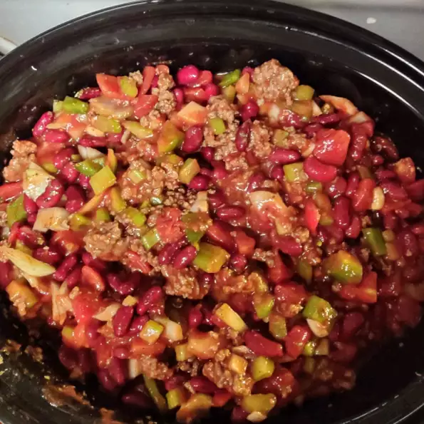

Chili

Ingredients
¾ cup diced green bell pepper
2 (10.75 ounce) cans tomato puree
1 (15 ounce) can kidney beans with liquid
1 (15 ounce) can kidney beans, drained
1 (15 ounce) can cannellini beans with liquid
½ tablespoon chili powder
¼ teaspoon ground black pepper
⅛ teaspoon hot pepper sauce
Steps
Place beef in a skillet over medium heat and cook until evenly brown, 8 to 10 minutes. Drain grease.
Transfer beef to a slow cooker and mix in onion, celery, bell pepper, garlic, tomato puree, kidney beans, and cannellini beans. Season with chili powder, salt, basil, oregano, parsley, black pepper, and hot pepper sauce.
Cover and cook on Low for 8 hours.